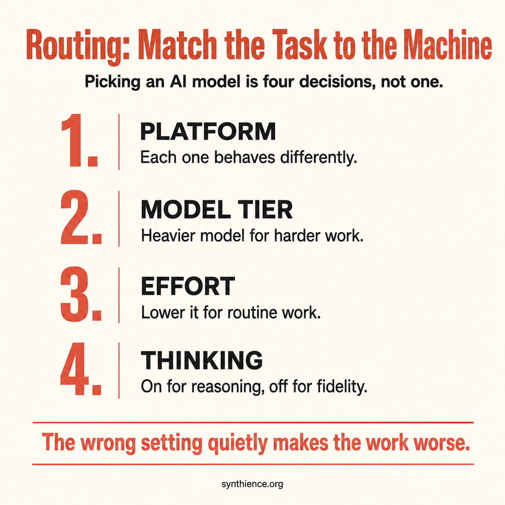

You Don’t Have a Method Problem. You Have a Routing Problem.
This guide extends PG-013. Where PG-013 argues that method matters more than model, this guide goes one level deeper: assuming you have a method, how do you send each task to the right tool and the right settings without wasting money or quietly degrading the result.
A practitioner guide for matching the task to the machine

One clarification first, because the title invites a fair objection. This does not retract PG-013. It narrows it. Routing is not separate from method; it is the part of method that happens before the first prompt, when you decide which system should do which kind of work. PG-013 says a serious method beats model-shopping. This guide says a serious method begins with routing. And routing is part of how the work gets done, not just a question of cost, for one concrete reason: the wrong setup does not only cost more, it produces worse output. A model configured wrong for the job can drop a section out of your document or talk itself out of an instruction you gave it. That is a quality failure, not a billing line.
The problem
Most people make the model decision once and never revisit it. They pick the most capable model their subscription offers and run everything through it: quick lookups, document updates, heavy drafting, casual questions, all on the same setting. That is not a routing decision. It is the absence of one.
The cost of getting it wrong runs in both directions. Over-provision a task and you burn time, money, and your usage quota for output no better than a cheaper setting would have produced. Updating a date or a single line in a long document is trivial work; sending that to the most powerful model at full power is pure waste. Under-provision a task and you get output that looks finished but needed more capability than you gave it, so you pay later in correction passes. Neither failure is visible at the moment you choose. Both are routing failures.
The axes of a routing decision
A routing decision has a few independent dimensions. The right answer on one does not set the answer on the others, which is the whole reason this is routing and not a single “how powerful” slider.
Which platform. Anthropic, OpenAI, Google, xAI, and others each behave differently, and the differences are behavioral, not just test scores. The frontier is close enough that raw capability rarely settles the choice. What settles it is which one fits the task. The behavioral map below is the part most people are missing, and it is where the real gains are.
Which model tier. Within a platform there is a ladder from light and fast to heavy and capable. The top of the ladder is the right answer for the hardest tasks and the wrong default for routine ones.
How much effort (where the platform offers it). Several platforms now let you set how much effort a model spends, separately from which model you picked. You can hold the model the same and move only this dial. A capable model on low effort handles a surprising amount of routine work for far less.
Thinking, on or off (where the platform offers it). Most platforms now have a mode where the model works through a problem step by step before answering. The label varies: a Thinking toggle on some, a separate reasoning model on others. If you do not know where your platform hides this control, you are leaving it at default without realizing it is a control at all.
Two things people miss. These settings stack: model, then effort, then thinking on top is three layered choices, not one, and the same model with thinking on at high effort is a different machine from that model with thinking off at low effort. And not every platform exposes all of them, so the honest instruction is always “where available.” Find out what your platform actually gives you before you assume.
A fair objection: nobody should run a multi-axis analysis to rewrite one sentence. Correct. The deliberation pays off on the kinds of task you do repeatedly, not on one-offs. You decide once that document updates go to a mid-tier model on low effort with thinking off, and from then on the decision is free. For genuine one-offs, intuition is fine and the cost of being slightly wrong is trivial. Routing is a habit you install on the work you repeat, not a toll on every interaction.
The behavioral map: what each platform is actually good at
Test tables tell you which model scores highest on a benchmark. They do not tell you how a model behaves on your real work, and the behavioral differences are where routing is won or lost. One caveat governs this whole section: the landscape moves fast, so treat what follows as current observations rather than fixed properties, and test your own tools on your own work. This is a map, not a verdict.
Anthropic (Claude): document fidelity. This is the behavior I rely on most and the one no leaderboard measures. In my sustained experience running the same work across all of these platforms, Anthropic models from Sonnet on up are the only ones I trust to take a complete document and rewrite it changing only what I asked, leaving everything else intact. I think of it as the model being able to update a whole file without wrecking the parts it was not told to touch. For a contract, a board memo, a long report, an operations document, anything where a silently dropped section is a real problem, that behavior is the entire game. Note the floor: I would not hand this job to the lightweight tier. Sonnet is where it starts, and Sonnet costs less than going to the top of the ladder for it, so for routine document work the mid-tier is not a compromise, it is the correct choice.
The reason this matters is the specific way the other platforms fail at it, which is worse than it sounds.
The fidelity failure modes (what the others tend to do). Ask many of the other platforms to update a long document and they do one of three things. They summarize a section instead of reproducing it. They insert a placeholder like “no change from previous version” that silently deletes the actual content of a whole section. Or they simply stop partway, hitting an internal length limit and leaving the end of your document missing. The placeholder behavior is the dangerous one, because it looks deliberate and you can lose entire sections without noticing. None of these is the model making things up. It is the model deciding, unhelpfully, that it knows a shortcut you did not ask for. For a business document you are going to sign or send, that is the failure that actually costs you.
xAI (Grok): recency and source-finding. Grok is notably good at one specific thing: finding what the internet is saying right now. It surfaces recent material other platforms’ search misses, sometimes things published only days earlier. It is also often better at turning up a working, freely accessible link to a source when other platforms cannot. The paid tier adds a mode where several specialized instances work a task together, which the free version does not have and which helps on some jobs.
OpenAI (GPT): range, and the best second opinion. GPT is the versatile all-rounder with deep tooling and a strong memory across sessions. In my own work it earns its place as a reviewer: it regularly catches things my drafting model missed and brings ideas from a different angle. Its known weakness for document work is a tendency to agree and to compress, so I do not let it hold the pen on the final version of a document unless I have to.
Google (Gemini): research and Google Workspace. Strong at research synthesis and handling images and mixed input, and native to Google Workspace, which can make it the right tool for Drive and Docs work even when another model is nominally smarter. It shares the compression tendency on document work, so the same caution applies.
The cheaper models (DeepSeek, Qwen, and others): bulk work and second opinions. Often dramatically cheaper, and useful for high-volume background work and for review passes. They are not the right choice for faithful document work, but review is a different job: you treat their output as leads to check, never as conclusions, so a model that fails differently from your main one is a real asset there precisely because it is cheap. One caution for business users: some of these route your text through servers in places your compliance rules may care about, so keep sensitive material off them.
The pattern is the one many people arrive at on their own. No platform is best at everything, and the people getting the most out of AI route deliberately. Here is the whole map at a glance:
| Platform | Reach for it when | Watch out for |
|---|---|---|
| Claude | Faithful document work and careful writing; updating a file without losing parts. | Not the cheapest for bulk or throwaway tasks. |
| Grok | Finding very recent material and working source links other tools miss. | Treat its claims like any other; verify. |
| GPT | General range, and as a second opinion that catches what your drafter missed. | Agrees and compresses; do not let it finalize a document. |
| Gemini | Research synthesis and anything living in Google Workspace. | Same compression tendency on document edits. |
| Cheaper models | Bulk background work and decorrelated review passes. | Not for faithful document edits; mind where sensitive data goes. |
The durable point is that running one tool for everything leaves both capability and money on the table.
A worked example: how the pieces fit together
The map above is a lookup table. Routing is what happens when you chain those choices across a real task. Here is a loop I actually run, and it shows two moves most people do not know they can make.
I use a top-tier model to create: to think hard and produce something good from scratch, a real draft or a genuine piece of analysis. Then I hand it to a different platform to review, because a fresh set of eyes that works differently catches what the author missed, and it reliably does. We go back and forth, one drafting and the other pushing. But when it comes to producing the final, clean version of the document, the reviewing model never holds the pen. Authorship of the version that becomes real stays on the model I trust for fidelity, because that is the one behavior the reviewer is unreliable at.
You can switch models inside one conversation, without starting over. On a single platform (Claude, for instance) you can change the model between turns, and the new model sees the entire conversation above it. So I can use the top-tier model to think through what the next version should be, switch to the mid-tier model right there in the same chat to actually generate that version (cheaper, and the fidelity-safe choice), then switch back, all without re-explaining anything, because the whole discussion is still in front of whichever model is active. A brand-new chat would start blank and you would have to paste everything in again. This only works within one platform, though: handing the draft to a different company’s model means copying it out and pasting the review back, since that is a different app.
Protecting a long document
The most damaging routing mistake is trusting a model to faithfully reproduce a long document when it cannot. So this gets its own rule, and it holds no matter which platform or plan you are on.
First, the reassuring part, because most people worry about a limit they will rarely hit. A current model on a paid plan can hold a very large document at once, currently a capacity of very roughly several hundred pages of text. Most contracts, reports, memos, and personal documents fit inside that with room to spare, so for the large majority of real work this is a non-issue.
When a document genuinely is too big to fit, here is the thing to understand, in plain terms: a model can read a long file without actually holding all of it in front of it at once. It can read it in pieces and then discuss it confidently, which is fine for “what does this document say.” But that is a different thing from having the whole file present, which is what a faithful full rewrite requires. If a model had to read your document in chunks to get through it, that is your signal it does not have the whole thing in front of it, so do not trust it to reproduce or edit the whole thing in one pass. Section the work yourself, give it one part at a time as the live text, and check each part.
And whatever the model later tells you about its own work, do not take its word for it. The cheapest, most reliable check is not another AI at all:
- Save the original document before you start, and treat it as untouchable. If you lose it, you cannot verify anything.
- Ask the model for the complete updated version as a full replacement, and tell it explicitly not to omit or summarize any unchanged part.
- Compare the original against the new version. A plain text comparison (a “diff,” built into common file-comparison tools and the compare feature in word processors) shows every line added, removed, or changed, with no guessing and no cost. For catching a section that silently vanished, this beats any AI, because it is not generating anything, it is comparing the actual text.
- Read the differences against what you actually asked for. A part shown as deleted that you never asked to touch is a silent loss, caught before it reached you.
That check costs almost nothing and it catches all three failure modes: the summary, the placeholder deletion, and the cut-off ending. The less reliable your access to a fidelity-safe model, the more this habit is doing for you, not less.
One related discipline: do not swap models in the middle of a careful document edit. Finish it on the model that started it. Handing the last leg to a different model imports that model’s compression habits at exactly the wrong moment. And one habit that prevents most of the trouble: do one big job per conversation. If you are going to work on a large document, give it its own fresh chat rather than dropping it into the middle of a long discussion, so the whole space is available for the file. Treat long threads as disposable and keep the real work in saved files, not in the scrollback.
When you cannot route ideally
Everything above assumes you have access to the right tool. Most people do not, all the time, and routing happens inside real constraints. Not everyone subscribes to multiple platforms. Quotas run out: on some plans your allowance refreshes on a rolling window of a few hours, so you can use up your budget for the period and be locked out until it resets. The honest version of this guide degrades gracefully:
- Several platforms, paid. Route fully. Creation, review, and final document work each go to the tool best at them, as in the worked example.
- One paid platform. Use its tiers and settings deliberately: the right model and effort for each kind of task, and the comparison check whenever you do whole-document work on a model prone to compression.
- One free platform. Know your real constraint: on free plans you often cannot even reach the leading model on that platform, so “use the fidelity-safe tier” may simply not be available to you. The comparison check becomes essential rather than optional, because it is the only thing standing between you and a silently dropped section.
The fallback that matters most is the cross-platform one. Say you have used up your quota on the platform you trust for documents but still have another subscription. The other platform is your next-best option, and you neutralize its weakness directly with the save-and-compare routine above: let it produce the full replacement, then compare the new version against the original you saved, and confirm it changed only what you asked. The less access you have, the more that routine is carrying.
A note on who is paying. In many workplaces today nobody tracks the cost closely, so the incentive to route carefully is weak there, though that is changing as the bills grow. For anyone paying their own way, the cost is immediate: running everything on the top model at full power burns a monthly quota in a fraction of the time deliberate routing would. Either way the habit is worth building, because the waste is real even when someone else absorbs it, and because routing is not only about cost. Even with unlimited budget, sending a faithful-reproduction task to a reasoning-heavy setting degrades the result.
On the settings, plainly
Effort. For routine work, turn it down. A capable model on low effort handles more than people expect, faster and cheaper, and you can dial it back up the moment a task actually needs depth.
Thinking. Thinking on does not mean better. It means more reasoning. For a task that needs faithful reproduction rather than reasoning, more reasoning is the opposite of what you want, because the model can reason its way past a plain instruction. It decides a section could be tighter and “improves” it, when you asked it to leave the thing alone. That is the real reason to turn thinking off for document work: not because of any statistic, but because you want the model to do what you said, not what it concluded would be better. Turn it on when the task is a genuine reasoning problem with dependent steps. Turn it off when the job is to update a document, retrieve a fact, or reproduce something exactly.
A note on specifics
The model names, tiers, and numbers in this guide are current as of writing and will not stay current. New versions ship constantly, tiers get renamed, settings move, capacities grow, and availability shifts. None of that touches the framework. The axes, the behavioral differences between platforms, the way to protect a long document, and the fallback when you cannot route ideally all outlast any particular model name or number. Read the specifics as illustration. Carry the structure.
The Monday-morning checklist
- Take a task you ran on your top model this week. Ask what the hardest single thing in it actually was, and whether a lighter setting would have done the same job.
- Find the thinking or reasoning control on the platform you use most. If you did not know where it was, you have been leaving it on default.
- On your next document update, drop the effort one step and see whether the output suffered. Usually it will not.
- The next time you update a complete document on a platform prone to compression, save the original first and compare the result against it before you rely on it.
- Notice which tool you reach for out of habit, and ask whether the task in front of you is the kind it is actually best at.
- Pick one recurring task and decide its routing once: platform, tier, effort, thinking. Stop re-deciding it by default every time.
The lever PG-013 pointed at was method over model. This guide is the part of the method most people skip: not how to work with the machine, but which machine, at which setting, for which task. It is one of the cheapest quality improvements available, because it costs nothing but a moment of deliberation, and it usually saves money at the same time.
Guides covering the foundational skills for working reliably with any AI system.
- PG-000: 10 Things Every AI User Should Do
- PG-001: How to Work Reliably With Conversational AI Over Time
- PG-002: AI-Assisted Editing Without Silent Loss
- PG-003: Verify Before You Work
- PG-004: You Are Accepting the First Adequate Answer
- PG-005: Your AI Updated the File. Did It Preserve What It Didn’t Touch?
- PG-009: Make the AI Show You the Source
- PG-010: Don’t Trust What the AI Says About Its Own Work
- PG-011: The Cross-AI Adversarial Review Protocol
- PG-012: Make the AI Tell You What It’s Guessing
- PG-013: You Don’t Have a Model Problem. You Have a Method Problem.
- PG-014: You Don’t Have a Method Problem. You Have a Routing Problem. (this guide)
Further reading
This guide is the companion to PG-013 and draws on the same verification discipline as the document-integrity guides below.
- PG-013: You Don’t Have a Model Problem. You Have a Method Problem. The argument this guide extends: method matters more than model.
- PG-002: AI-Assisted Editing Without Silent Loss The full procedure behind the diff safeguard.
- PG-003: Verify Before You Work Confirming a model has actually ingested a document before you rely on it.
- PG-010: Don’t Trust What the AI Says About Its Own Work The broader principle of substituting evidence for self-report.
- PG-011: The Cross-AI Adversarial Review Protocol Using a different platform as a decorrelated second opinion.
Full framework documentation available at the Synthience Institute community on Zenodo.
A note on evidence
The platform comparisons in this guide are behavioral observations from sustained first-hand use across these systems, not benchmark results. They are offered to be tested, not taken on faith: run the same task across the tools you have and see what happens for yourself. They will also shift as the platforms change.
The one external fact, the approximate amount a current model can hold at once on a paid plan, is drawn from the platform’s published documentation and is current as of writing. support.claude.com